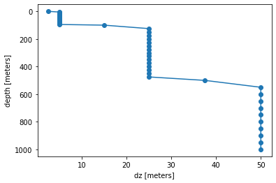
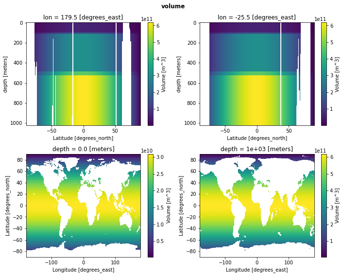
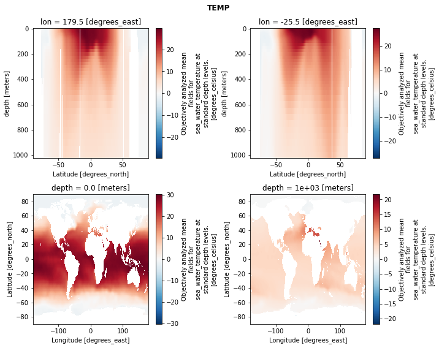
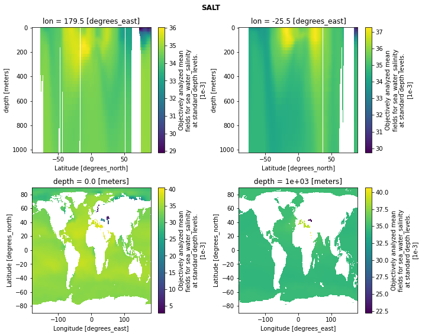
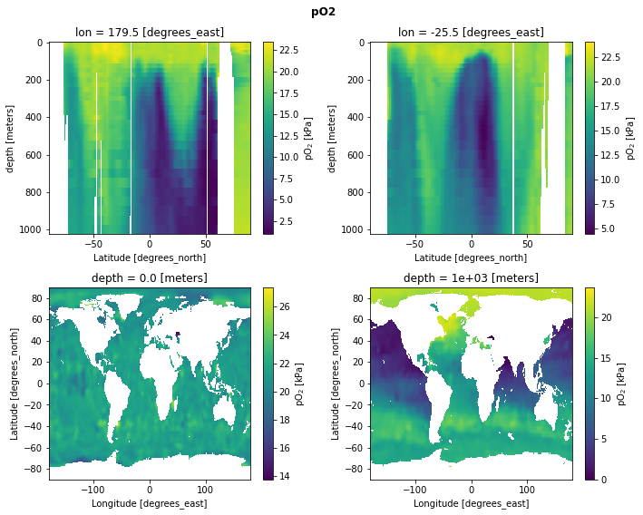

World Ocean Atlas Dataset
Contents
World Ocean Atlas Dataset#
This notebooks accesses the World Ocean Atlas dataset using intake and generates a merged dataset for use in the calculation.
%load_ext autoreload
%autoreload 2
import os
import data_collections as dc
import intake
import matplotlib.pyplot as plt
import thermodyn
import util
import xarray as xr
/glade/work/mclong/miniconda3/envs/metabolic/lib/python3.7/site-packages/dask_jobqueue/core.py:20: FutureWarning: tmpfile is deprecated and will be removed in a future release. Please use dask.utils.tmpfile instead.
from distributed.utils import tmpfile
Load World Ocean Atlas data#
Access intake catalog for remote data.
catalog = intake.open_catalog(f'data/catalogs/woa2018-catalog.yml')
catalog
woa2018-catalog:
args:
path: data/catalogs/woa2018-catalog.yml
description: World Ocean Atlas, v2018
driver: intake.catalog.local.YAMLFileCatalog
metadata: {}
Compile data comprising a monthly climatology
ds_list = []
variables = dict(
oxygen=dict(keep_vars=["o_an", "depth_bnds"], set_coords=["depth_bnds"]),
temperature=dict(keep_vars=["t_an"]),
salinity=dict(keep_vars=["s_an"]),
)
ds_list = []
for variable, info in variables.items():
ds_list_inner = []
for month in range(1, 13):
dsi = (
catalog[variable](time_code=month)
.to_dask()[info["keep_vars"]]
.isel(time=0, drop=True)
.sel(depth=slice(0, 1000.0))
)
if 'set_coords' in info:
dsi = dsi.set_coords(info['set_coords'])
ds_list_inner.append(dsi)
ds_list.append(xr.concat(ds_list_inner, dim="time", coords="minimal", combine_attrs="override"))
ds = xr.merge(ds_list).rename({"o_an": "O2", "t_an": "TEMP", "s_an": "SALT"})
ds["pO2"] = thermodyn.compute_pO2(
O2=ds.O2,
T=ds.TEMP,
S=ds.SALT,
depth=xr.full_like(ds.TEMP, fill_value=1.0) * ds.depth,
gravimetric_units=True,
)
# add "dz" variable
ds["dz"] = ds.depth_bnds.diff("nbounds").squeeze()
ds.dz.attrs['units'] = ds.depth.attrs['units']
# add gridcell "area" variable
ds["area"] = util.compute_grid_area(ds)
# add "volume" variable
isvalid = (ds.TEMP.notnull() & ds.O2.notnull() & ds.SALT.notnull()).all('time')
ds["volume"] = (ds.dz * ds.area).where(isvalid)
ds.volume.attrs["long_name"] = "Volume"
ds.volume.attrs["units"] = "m^3"
# set some attributes
ds.lat.attrs["long_name"] = "Latitude"
ds.lat.attrs["units"] = "degrees_north"
ds.lon.attrs["long_name"] = "Longitude"
ds.lon.attrs["units"] = "degrees_east"
ds
<xarray.Dataset>
Dimensions: (time: 12, depth: 47, lat: 180, lon: 360, nbounds: 2)
Coordinates:
depth_bnds (depth, nbounds) float32 0.0 2.5 2.5 ... 975.0 975.0 1.025e+03
* lat (lat) float32 -89.5 -88.5 -87.5 -86.5 ... 86.5 87.5 88.5 89.5
* lon (lon) float32 -179.5 -178.5 -177.5 -176.5 ... 177.5 178.5 179.5
* depth (depth) float32 0.0 5.0 10.0 15.0 ... 850.0 900.0 950.0 1e+03
Dimensions without coordinates: time, nbounds
Data variables:
O2 (time, depth, lat, lon) float32 dask.array<chunksize=(1, 47, 180, 360), meta=np.ndarray>
TEMP (time, depth, lat, lon) float32 dask.array<chunksize=(1, 47, 180, 360), meta=np.ndarray>
SALT (time, depth, lat, lon) float32 dask.array<chunksize=(1, 47, 180, 360), meta=np.ndarray>
pO2 (time, depth, lat, lon) float32 dask.array<chunksize=(1, 47, 180, 360), meta=np.ndarray>
dz (depth) float32 2.5 5.0 5.0 5.0 5.0 ... 50.0 50.0 50.0 50.0 50.0
area (lat, lon) float64 1.079e+08 1.079e+08 ... 1.079e+08 1.079e+08
volume (depth, lat, lon) float64 dask.array<chunksize=(47, 180, 360), meta=np.ndarray>
Attributes: (12/49)
Conventions: CF-1.6, ACDD-1.3
title: World Ocean Atlas 2018 : mole_concentrat...
summary: Climatological mean dissolved oxygen for...
references: Garcia, H. E., K. Weathers, C. R. Paver,...
institution: National Centers for Environmental Infor...
comment: global climatology as part of the World ...
... ...
publisher_email: NCEI.info@noaa.gov
nodc_template_version: NODC_NetCDF_Grid_Template_v2.0
license: These data are openly available to the p...
metadata_link: https://www.nodc.noaa.gov/OC5/woa18/
date_created: 2019-07-29
date_modified: 2019-07-29 Peek and verify data#
ds.dz.plot(y='depth', yincrease=False, marker='o');

for field in ['volume', 'TEMP', 'SALT', 'pO2']:
fig, axs = plt.subplots(2, 2, figsize=(10, 8))
selkw = {'time': 0} if 'time' in ds[field].dims else {}
ds[field].sel(lon=179.5, **selkw).plot(yincrease=False, ax=axs[0, 0])
ds[field].sel(lon=-25.5, **selkw).plot(yincrease=False, ax=axs[0, 1])
ds[field].sel(depth=0.0, **selkw).plot(ax=axs[1, 0])
ds[field].sel(depth=1000.0, **selkw).plot(ax=axs[1, 1])
plt.suptitle(field, fontweight='bold')
plt.tight_layout();




Write cache file to project catalog#
this_notebook = 'obs-woa2018.ipynb'
curator = util.curator_local_assets()
key = 'woa2018'
cache_file = f'{dc.cache_dir}/{key}.zarr'
os.makedirs(os.path.dirname(cache_file), exist_ok=True)
with util.timer(f"write: {cache_file}"):
ds.to_zarr(cache_file, mode='w', consolidated=True)
curator.add_source(
key=key,
urlpath=cache_file,
description=f'World Ocean Atlas, 2018 data; processed by {this_notebook}',
driver='zarr',
overwrite=True,
)
ds.info()
[write: /glade/scratch/mclong/ocean-metabolism/woa2018.zarr]: 8.85237s
overwriting "woa2018" key in "sources"
xarray.Dataset {
dimensions:
time = 12 ;
depth = 47 ;
lat = 180 ;
lon = 360 ;
nbounds = 2 ;
variables:
float32 O2(time, depth, lat, lon) ;
O2:standard_name = mole_concentration_of_dissolved_molecular_oxygen_in_sea_water ;
O2:long_name = Objectively analyzed mean fields for mole_concentration_of_dissolved_molecular_oxygen_in_sea_water at standard depth levels. ;
O2:cell_methods = area: mean depth: mean time: mean within years time: mean over years ;
O2:grid_mapping = crs ;
O2:units = micromoles_per_kilogram ;
float32 depth_bnds(depth, nbounds) ;
depth_bnds:comment = depth bounds ;
float32 lat(lat) ;
lat:standard_name = latitude ;
lat:long_name = Latitude ;
lat:units = degrees_north ;
lat:axis = Y ;
lat:bounds = lat_bnds ;
float32 lon(lon) ;
lon:standard_name = longitude ;
lon:long_name = Longitude ;
lon:units = degrees_east ;
lon:axis = X ;
lon:bounds = lon_bnds ;
float32 depth(depth) ;
depth:standard_name = depth ;
depth:bounds = depth_bnds ;
depth:positive = down ;
depth:units = meters ;
depth:axis = Z ;
float32 TEMP(time, depth, lat, lon) ;
TEMP:standard_name = sea_water_temperature ;
TEMP:long_name = Objectively analyzed mean fields for sea_water_temperature at standard depth levels. ;
TEMP:cell_methods = area: mean depth: mean time: mean within years time: mean over years ;
TEMP:grid_mapping = crs ;
TEMP:units = degrees_celsius ;
float32 SALT(time, depth, lat, lon) ;
SALT:standard_name = sea_water_salinity ;
SALT:long_name = Objectively analyzed mean fields for sea_water_salinity at standard depth levels. ;
SALT:cell_methods = area: mean depth: mean time: mean within years time: mean over years ;
SALT:grid_mapping = crs ;
SALT:units = 1e-3 ;
float32 pO2(time, depth, lat, lon) ;
pO2:standard_name = partial_pressure_oxygen_kPa ;
pO2:long_name = pO$_2$ ;
pO2:cell_methods = area: mean depth: mean time: mean within years time: mean over years ;
pO2:grid_mapping = crs ;
pO2:units = kPa ;
pO2:note = computed from O2, T, and S ;
float32 dz(depth) ;
dz:units = meters ;
float64 area(lat, lon) ;
area:units = m^2 ;
area:long_name = area ;
float64 volume(depth, lat, lon) ;
volume:long_name = Volume ;
volume:units = m^3 ;
// global attributes:
:Conventions = CF-1.6, ACDD-1.3 ;
:title = World Ocean Atlas 2018 : mole_concentration_of_dissolved_molecular_oxygen_in_sea_water January 1.00 degree ;
:summary = Climatological mean dissolved oxygen for the global ocean from in situ oceanographic profile data ;
:references = Garcia, H. E., K. Weathers, C. R. Paver, I. Smolyar, T. P. Boyer, R. A. Locarnini, M. M. Zweng, A. V. Mishonov, O. K. Baranova, D. Seidov, and J. R. Reagan, 2019. World Ocean Atlas 2018, Volume 3: Dissolved Oxygen, Apparent Oxygen Utilization, and Oxygen Saturation. A. V. Mishonov, Technical Ed., NOAA Atlas NESDIS 83 ;
:institution = National Centers for Environmental Information (NCEI) ;
:comment = global climatology as part of the World Ocean Atlas project ;
:id = woa18_all_o01_01.nc ;
:naming_authority = gov.noaa.ncei ;
:sea_name = World-Wide Distribution ;
:time_coverage_start = 1900-01-01 ;
:time_coverage_end = 2017-01-31 ;
:time_coverage_duration = P!!Y ;
:time_coverage_resolution = P01M ;
:geospatial_lat_min = -90.0 ;
:geospatial_lat_max = 90.0 ;
:geospatial_lon_min = -180.0 ;
:geospatial_lon_max = 180.0 ;
:geospatial_vertical_min = 0.0 ;
:geospatial_vertical_max = 1500.0 ;
:geospatial_lat_units = degrees_north ;
:geospatial_lat_resolution = 1.00 degrees ;
:geospatial_lon_units = degrees_east ;
:geospatial_lon_resolution = 1.00 degrees ;
:geospatial_vertical_units = m ;
:geospatial_vertical_resolution = SPECIAL ;
:geospatial_vertical_positive = down ;
:creator_name = Ocean Climate Laboratory ;
:creator_email = NCEI.info@noaa.gov ;
:creator_url = http://www.ncei.noaa.gov ;
:creator_type = group ;
:creator_institution = National Centers for Environmental Information ;
:project = World Ocean Atlas Project ;
:processing_level = processed ;
:keywords = Oceans< Ocean Oxygen > Dissolved Oxygen ;
:keywords_vocabulary = ISO 19115 ;
:standard_name_vocabulary = CF Standard Name Table v49 ;
:contributor_name = Ocean Climate Laboratory ;
:contributor_role = Calculation of climatologies ;
:cdm_data_type = Grid ;
:publisher_name = National Centers for Environmental Information (NCEI) ;
:publisher_institution = National Centers for Environmental Information ;
:publisher_type = institution ;
:publisher_url = http://www.ncei.noaa.gov/ ;
:publisher_email = NCEI.info@noaa.gov ;
:nodc_template_version = NODC_NetCDF_Grid_Template_v2.0 ;
:license = These data are openly available to the public. Please acknowledge the use of these data with the text given in the acknowledgment attribute. ;
:metadata_link = https://www.nodc.noaa.gov/OC5/woa18/ ;
:date_created = 2019-07-29 ;
:date_modified = 2019-07-29 ;
}